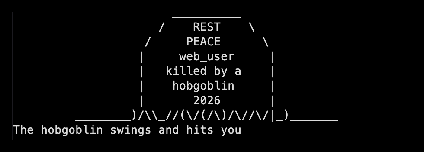
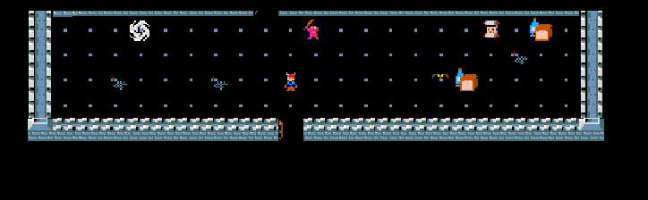
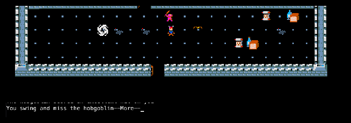
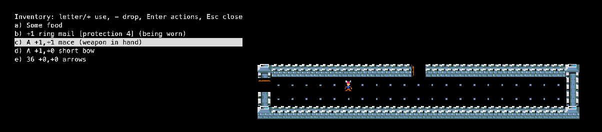

The Berkeley Rogue · the game that named a genre
> Enter the dungeonRogue has no parent game. Michael Toy and Glenn Wichman wrote it at UC Santa Cruz around 1980, inspired by the text adventure Colossal Cave Adventure and the mainframe Star Trek game, and by Dungeons & Dragons. They wanted an adventure that was different every time. What made it possible was Ken Arnold's curses library, which could put a character anywhere on a terminal screen.
Version 3.6 (1981) was the first to spread widely. Toy then moved to UC Berkeley and continued the game there with Ken Arnold, through 5.2 and 5.3 to 5.4, the version shipped with 4.3BSD Unix. Its children: Rogue PC (Epyx), Super-Rogue and Advanced Rogue came from 3.6; Hack, and through it NetHack, borrowed its ideas. See the family tree.
| Michael C. Toy | Co-creator, main programmer |
| Glenn R. Wichman | Co-creator, game design, named the game |
| Kenneth C. R. C. Arnold | Author of curses; co-developer of the Berkeley versions (5.x) |
| Jon Lane | Epyx PC port (a sibling of this version) |
| Roguelike Restoration Project | Preserved the source this port is built from (rogue5.4 @ 9d0dccc) |




@ is you, A–Z are the monsters.rogue.h holds the whole game state as global structs and linked lists (THING is both a monster and an object).curses. The machine-dependent parts (locking, the score file, the save format) sit in mach_dep.c and mdport.c.encwrite() in save.c) and checked against the inode and time, so a copied save would not load on the original system.MASTER and asks for a password checked against a crypt() hash (main.c).| Thing | Count | Notable ones |
|---|---|---|
| Classes | 1 | Everyone is the same fighter, fresh from the guild. |
| Monsters | 26 | One per letter: the Aquator rusts your armour, the Leprechaun steals gold, the Nymph steals a magic item and vanishes, the Xeroc poses as an item, the Venus Flytrap holds you, the Ice monster freezes you, the Wraith and Vampire drain levels, the Jabberwock and Dragon wait deep down. |
| Potions | 14 | Hallucination turns every monster into a random letter; levitation, see invisible, raise level. |
| Scrolls | 18 | Scare monster must never be picked up twice; aggravate monsters; and “food detection”, which finds your next meal. |
| Rings | 14 | Adornment does nothing at all; aggravate monster is cursed. |
| Wands & staffs | 14 | Polymorph, teleport away, drain life, cancellation. |
| Weapons | 9 | Mace, long sword, two-handed sword, bows, crossbows, darts, spears. |
| Armour | 8 | From leather armour to plate mail. |
| Traps | 8 | Trap door, arrow, sleeping gas, bear trap, teleport, poison dart, rust, mysterious. |
| Levels | 26+ | The Amulet lies on level 26; the dungeon goes deeper. |
| Spells, skills | 0 | Magic lives only in items. |
“A Guide to the Dungeons of Doom” by Michael C. Toy and Kenneth C. R. C. Arnold, the manual shipped with the source: read it here (text).
% and press > to go down (it walks there if you have seen them).There is no walkthrough: every dungeon is different. These rules of thumb get most players further:
MASTER build flag and a password.